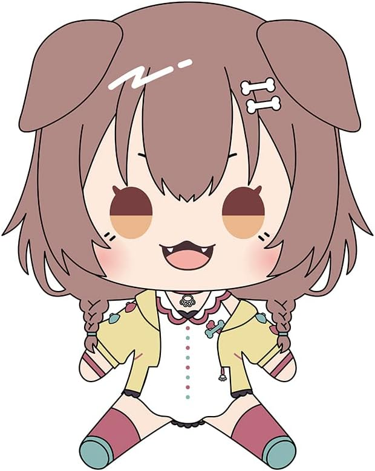

More Info
(Volume Warning)
Don't give Subaru Fireworks
Subaru jumpscare comparison
Fun Facts:
-Despite being presented as a virtual avatar, Subaru does concert performances in real life using special technology
-The most recent concert in Japan that included Subaru had an attendace exceeding 86,000
-She currently has 1.81 Million Subscribers on Youtube and 1.3 Million followers on Twitter
-She has a huge variety of merchandise, such as food, plushies, figures, clothes, cards, and almost anything you can think of
Subaru has also met her match in energy. Although she has many friendships, this friend group is the best
example to represent Subaru's friendships.
Ookami Mio
Responsible and level-headed when compared to her peers, and also regarded as being exceptionally kind, with friends frequently seeking her personal advice. Inugami Korone
Korone has a sweet and goofy personality comparable to that of an actual dog, and has a high-pitched laugh that resembles the cry of a screeching seagull. Nekomata Okayu
Nekomata Okayu
Okayu is typically very relaxed, free-spirited, and also somewhat prankster and is also known for impulsively swiping food. Okayu typically likes to talk a lot and through many streams.
Responsible and level-headed when compared to her peers, and also regarded as being exceptionally kind, with friends frequently seeking her personal advice. Inugami Korone
Korone has a sweet and goofy personality comparable to that of an actual dog, and has a high-pitched laugh that resembles the cry of a screeching seagull.
Nekomata OkayuOkayu is typically very relaxed, free-spirited, and also somewhat prankster and is also known for impulsively swiping food. Okayu typically likes to talk a lot and through many streams.
